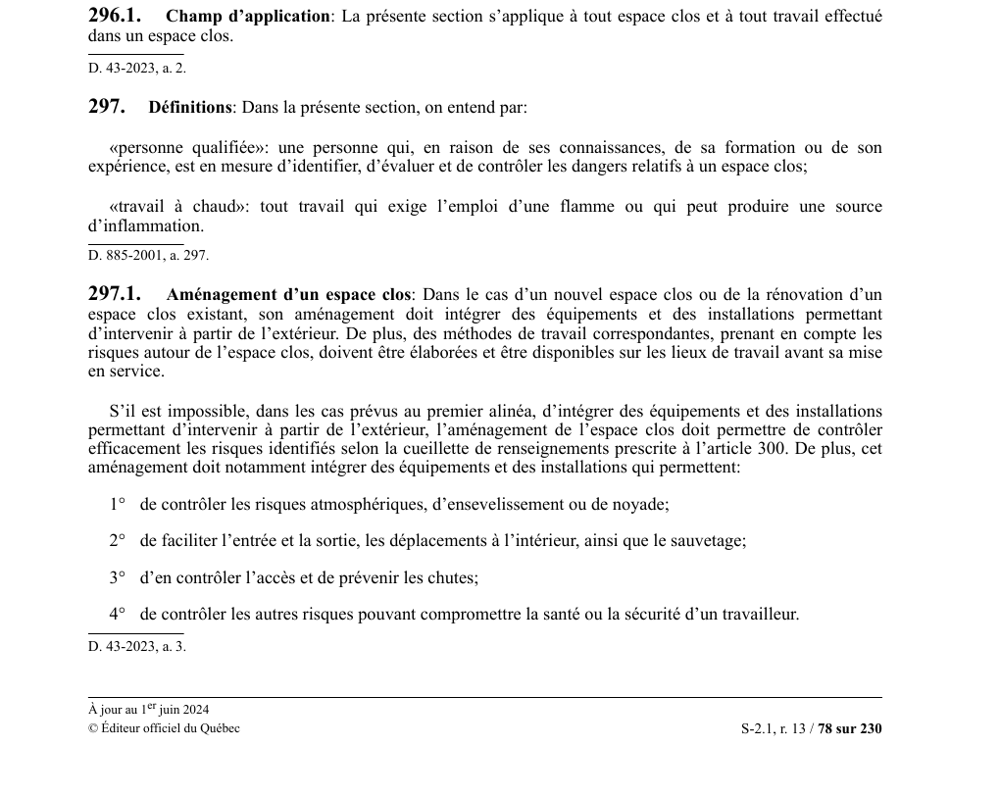

art-296.1-RSST : champ d'application (espace clos)
Un article du wiki ⚖️ Recueil législatif
En bref
Champ d'application de la section « Travail dans un espace clos » : elle s'applique à tout espace clos et à tout travail effectué dans un espace clos. L'article 297 définit notamment « espace clos » et « personne qualifiée ».
🌐 LegisQuébec · 📄 PDF officiel
Texte officiel : capture du PDF

Toucher l'image pour l'agrandir🔗 Voir art. 296.1 RSST dans le PDF (page 78) · texte à jour au 1er juin 2024
📚 Source légale : D. 43-2023, a. 2. · LégisQuébec
Voir aussi
- art. 302 : ventilation d'un espace clos · conditions atmosphériques à maintenir par ventilation avant et pendant l'accès.
- ⚖️ Loi habilitante : LSST
- ↑ Index du bloc : Travail dans un espace clos
Pages qui pointent ici (26)
- 🎯 Démarrage rapide, conseiller SST Hygiène industrielle
- 🎯 Démarrage rapide, conseiller SST Sécurité industrielle
- Agresseurs physiques Hygiène industrielle
- art-1-RSST Sécurité industrielle
- art-101-RSST Toxicologie
- art-130-RSST Ergonomie
- art-130-RSST Hygiène industrielle
- art-131-RSST Sécurité industrielle
- art-135-RSST Sécurité industrielle
- art-141-RSST Sécurité industrielle
- art-188.1-RSST Toxicologie
- art-296.1-RSST Hygiène industrielle
- art-296.1-RSST Sécurité industrielle
- art-297-RSST : définitions Recueil législatif
- art-300-RSST Sécurité industrielle
- art-302-RSST : ventilation d'un espace clos Recueil législatif
- art-309-RSST Sécurité industrielle
- Asphyxiants simples et chimiques Hygiène industrielle
- Asphyxiants simples et chimiques Toxicologie
- Espaces clos Sécurité industrielle
- Programme espaces clos en mine Hygiène industrielle
- Programme espaces clos en mine Sécurité industrielle
- RSST Recueil législatif
- RSST Hygiène industrielle
- RSST Sécurité industrielle
- RSST : Section 26 : Travail dans un espace clos Recueil législatif